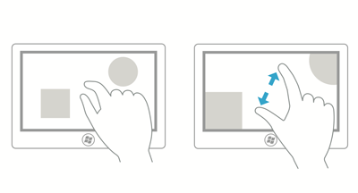
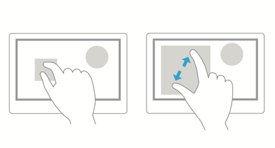

Optical zoom and resizing
This article describes Windows zooming and resizing elements and provides user experience guidelines for using these interaction mechanisms in your apps.
Important APIs: Windows.UI.Input, Input (XAML)
Optical zoom lets users magnify their view of the content within a content area (it is performed on the content area itself), whereas resizing enables users to change the relative size of one or more objects without changing the view of the content area (it is performed on the objects within the content area).
Both optical zoom and resizing interactions are performed through the pinch and stretch gestures (moving fingers farther apart zooms in and moving them closer together zooms out), or by holding the Ctrl key down while scrolling the mouse scroll wheel, or by holding the Ctrl key down (with the Shift key, if no numeric keypad is available) and pressing the plus (+) or minus (-) key.
The following diagrams demonstrate the differences between resizing and optical zooming.
Optical zoom: User selects an area, and then zooms into the entire area.

Resize: User selects an object within an area, and resizes that object.

Note Optical zoom shouldn't be confused with Semantic Zoom. Although the same gestures are used for both interactions, semantic zoom refers to the presentation and navigation of content organized within a single view (such as the folder structure of a computer, a library of documents, or a photo album).
Dos and don'ts
Use the following guidelines for apps that support either resizing or optical zooming:
If maximum and minimum size constraints or boundaries are defined, use visual feedback to demonstrate when the user reaches or exceeds those boundaries.
Use snap points to influence zooming and resizing behavior by providing logical points at which to stop the manipulation and ensure a specific subset of content is displayed in the viewport. Provide snap points for common zoom levels or logical views to make it easier for a user to select those levels. For example, photo apps might provide a resizing snap point at 100% or, in the case of mapping apps, snap points might be useful at city, state, and country/region views.
Snap points enable users to be imprecise and still achieve their goals. If you're using XAML, see the snap points properties of ScrollViewer.
There are two types of snap-points:
- Proximity - After the contact is lifted, a snap point is selected if inertia stops within a distance threshold of the snap point. Proximity snap points still allow a zoom or resize to end between snap points.
- Mandatory - The snap point selected is the one that immediately precedes or succeeds the last snap point crossed before the contact was lifted (depending on the direction and velocity of the gesture). A manipulation must end on a mandatory snap point.
Use inertia physics. These include the following:
- Deceleration: Occurs when the user stops pinching or stretching. This is similar to sliding to a stop on a slippery surface.
- Bounce: A slight bounce-back effect occurs when a size constraint or boundary is passed.
Space controls according to the Guidelines for targeting.
Provide scaling handles for constrained resizing. Isometric, or proportional, resizing is the default if the handles are not specified.
Don't use zooming to navigate the UI or expose additional controls within your app, use a panning region instead. For more info on panning, see Guidelines for panning.
Don't put resizable objects within a resizable content area. Exceptions to this include:
- Drawing applications where resizable items can appear on a resizable canvas or art board.
- Webpages with an embedded object such as a map.
Note In all cases, the content area is resized unless all touch points are within the resizable object.